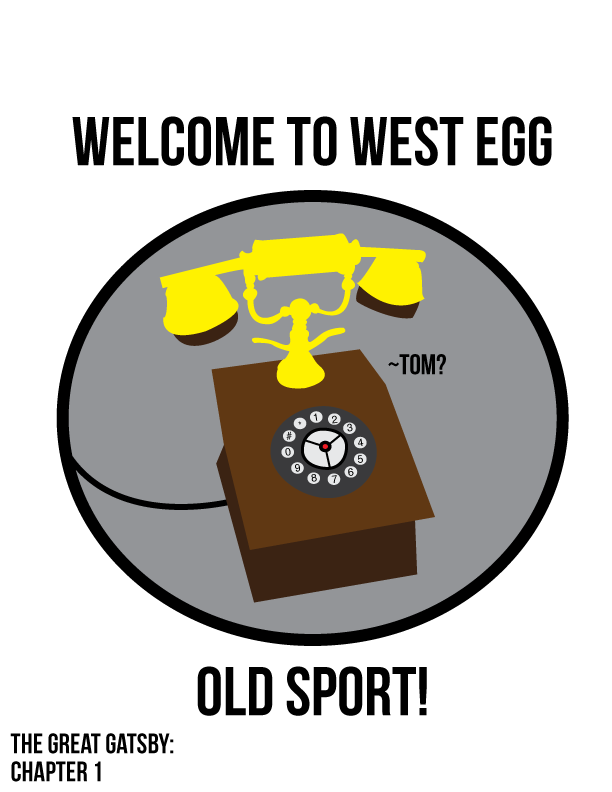

The Great Gatsby: Chapter 5
From The Great Gatspedia, the free gatspedia
The Great Gatsby: Chapter 5
| Page Count | 15 |
|---|---|
| Themes | Control |
| Racism | |
| Women's Roles |
After five years, Jay Gatsby and Daisy Buchanan are finally reunited in chapter five. Gatsby offers to pay Nick Carraway for arranging the meeting but gently refuses. After organizing a tea party at Carraway's home, Daisy is invited, unaware of Gatsby's arrival. At first the two are painfully awkward but after Carraway returns, the two have seemed to rekindled their friendship. Gatsby tours Daisy around his mansion, and she is overwhelmed by his lavish possessions. By the end of the night, both Daisy and Gatsby have rekindled their romantic relationship and Carraway leaves the two alone.
Setting
In Chapter 5, the primary settings are Nick's house and Gatsby's. This is where the majoraty of the events take place. Gatsby has Nick's house decorated lavishly with flowers in preperation for Daisy's arrvial to the surprise tea party. Gatsby's mansion is extremely grand, and Daisy is extremely impressed and overwhelmed at the amount of wealth involved with it's creation.